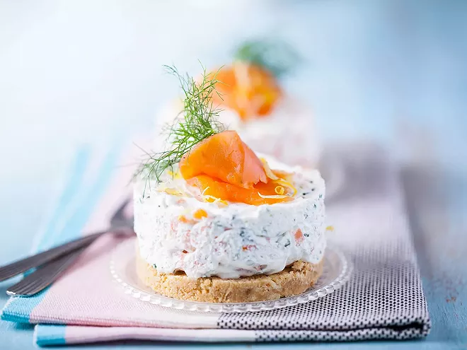
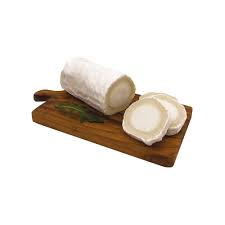
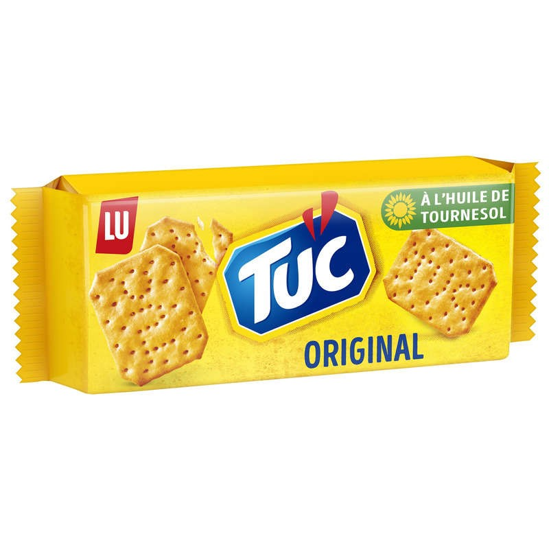
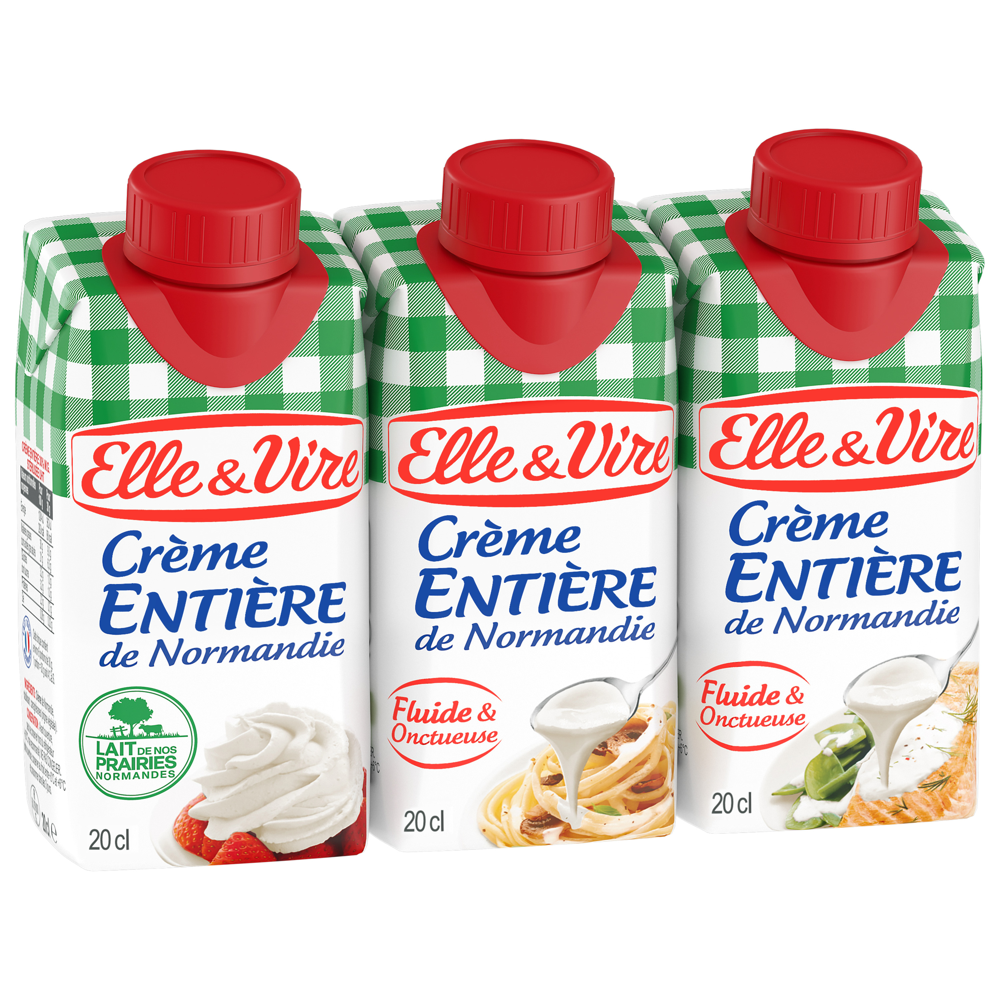
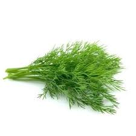
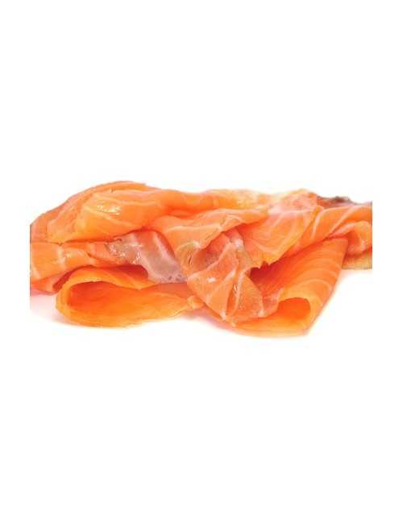
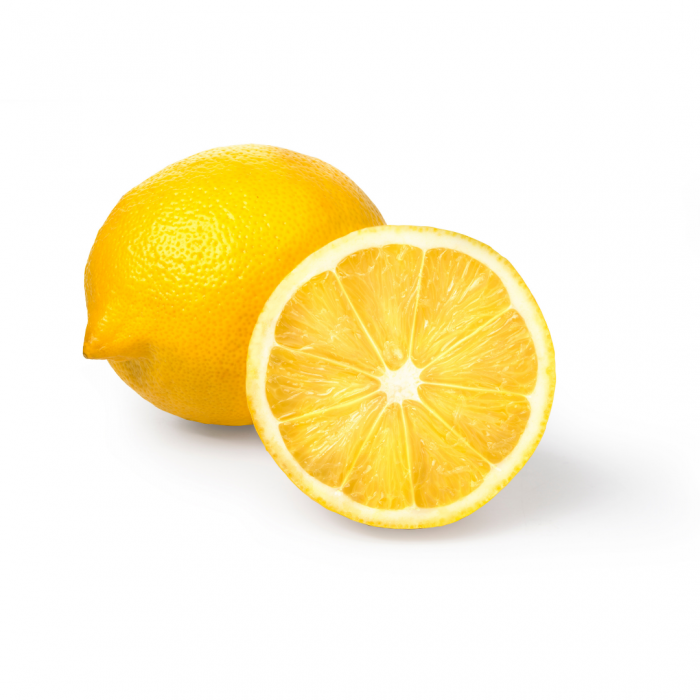
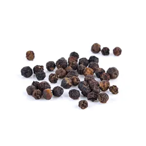

GourmeTech
Cheesecake au chèvre frais et à la truite fumée

favorite
Dessert
45 min
Facile
Liste des ingrédients :
- 2 Buchette de chèvre frais
- 100g de crackers salés
-
 50g de beurre mou
50g de beurre mou
- 20 cl de crème liquide entière
- 1 bouquet d’aneth
- 4 tranches de truite fumée
- 1/2 citron
- Poivre
Préparation :
- Mixez les crackers et mélangez-les avec le beurre.
- Chemisez 4 cercles de présentation d’une feuille de rhodoïd et déposez une couche de préparation aux crackers en tassant bien.
- Montez la crème liquide au fouet pour obtenir une crème fouettée et mélangez délicatement avec le chèvre doux et frais écrasé, deux tranches de truite fumée coupées en petits dés, du poivre et l’aneth ciselée (réservez quelques branches pour le dressage).
- Placez la préparation sur la base aux crackers et réservez au frais pendant 12 heures.
- Démoulez les cheesecakes et disposez dessus une demi-tranche de truite fumée. Ajoutez une branche d’aneth, un filet de jus de citron et quelques zestes.
Recettes similaires
- Quiche à la patate douce et au chèvre
- Pizza chèvre miel
- Tartines aux légumes confits et chèvre